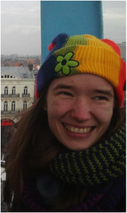

List of projects/laboratories offering internships
- Microfluidic solutions to chemical and biological problems
- Telomeres and genome integrity
- Novel photoswitchable organocatalysts based on molecular motors
- Synthesis and characterization of E-selectin binding peptides for the development of multimodal imaging probes
- Development of metallopeptides as catalysts for greener chemical transformations
- Improving robustness of host cells for external environments of varying and changing osmolalilites
- What happens to the anomalies of super-cooled salty water?
- Developing new simulation methods for the modelling of supramolecular Interactions
- A computational genomics approach to enhancer-promoter interactions
- Genetic code expansion and reprogramming
- Modifying G protein-coupled receptors for crystallographic studies
Microfluidic solutions to chemical and biological problems - occupied
A short description of the project
The deMello group specialises in microfluidic technology and nanoscale science. Research performed in the group covers areas such as the development of microfluidic devices for high-throughput biological and chemical analysis, nanofluidic reaction systems for chemical synthesis, ultra-sensitive optical detection techniques, novel methods for nanoparticle synthesis, the exploitation of semiconducting materials in diagnostic applications, the development of intelligent microfluidics and the processing of living organisms. If you are interested in doing a project with the deMello group, please take a look at our currently available projects (http://www.demellogroup.ethz.ch/en/mastersprojects.php).
Minimum time (e.g. 3-6 months)
Open.
Possible start
Open.
Required documents for contact (e.g. CV, motivational letter)
CV and a short motivational letter.
Contact information
Dr Katherine Elvira
Senior Scientist
Institute for Chemical and Bioengineering
Department of Chemistry and Applied Biosciences
ETH Zürich
Email: katherine.elvira AT chem.ethz.ch
Telomeres and Genome Integrity - occupied
A short description of the project
The European Research Institute for the Biology of Ageing (ERIBA) is a newly established research institute at the University Medical Center Groningen (UMCG) in the Netherlands. The central theme at ERIBA is the mechanisms of ageing. We aim to identify physiological and molecular changes that can explain the loss of cells and functional decline of cells and tissues with age to achieve and promote healthy ageing. To do so, we make use of state of the art technology and a variety of model organisms. ERIBA is housed in a brand new building and is part of the UMCG campus in central Groningen, a small (200,000 inhabitants) but vibrant city (with over 25,000 students) in the north of the Netherlands.
The Laboratory of Telomeres and Genome Integrity at ERIBA, headed by Dr. Michael Chang, aims to characterize mechanisms of telomere maintenance, with the ultimate goal of elucidating the role of telomeres in cancer progression and replicative ageing.
Telomeres, the physical ends of eukaryotic chromosomes, help distinguish natural chromosome ends from DNA breaks in need of repair. Dysfunctional telomeres result in DNA damage checkpoint activation and cell cycle arrest. Telomeres progressively shorten due to incomplete DNA replication and nucleolytic degradation. When telomeres are critically shortened, cells can no longer divide, reaching a state known as replicative senescence. Shortening is counteracted by telomerase, the specialized reverse transcriptase that elongates telomeres. However, most human somatic cells express little or no telomerase, so telomeres erode with each passing cell division, ultimately leading to replicative senescence. This process has been proposed to be one determinant of organismal ageing.
Techniques covered in the project
Research in the Chang lab combines classical genetic and molecular biological approaches with high-throughput genomic methodologies using the budding yeast Saccharomyces cerevisiae as a model organism to study telomere length regulation.
Minimum time (e.g. 3-6 months)
Open.
Possible start
Open.
Required documents for contact (e.g. CV, motivational letter)
CV and a motivational letter.
Contact information
For more information about Dr. Chang and ERIBA, see http://www.eriba.umcg.nl.m.chang AT umcg.nl
Novel photoswitchable organocatalysts based on molecular motors - occupied
A short description of the project
Figure 1. Rotary cycle of a molecular motor
Photoswitchable catalysis is a fast growing field in which photochemical processes are used to alter the result of chemically catalyzed reactions. Unique amongst photoswitchable molecules, light driven molecular motors are able to convert photochemical energy directly into rotary motion which is realized within a sequence of transformations (depicted in Figure 1). In special cases the energy barrier between those transformations is big enough to isolate the motor molecule in three different states (I, II and III on Figure 2), which makes it act as a ternary molecular switch. State I corresponds to the "off" state in which the "rotor" and "stator" part of the molecule point in opposite directions. States II and III correspond to two different "on" states in which the "rotor" and "stator" are pointing to the same side of the molecule. Steric hindrance causes a thermal energy barrier between states II and III which makes it possible to isolate both forms at room temperature.States II and III have the opposite sense of axial chirality - M or P. They are so called pseudoenantiomers.
Figure 2. Motor organocatalyst contains DMAP and thiourea as catalytically active parts and exists in 3 different states which. States II and III give different stereochemical outcome of Michael addition of 2-metoxythiophenol to cyclohexenone
In 2011 (Science, 2011, 331, 1429-1432) we have demonstrated that by using a molecular motor bearing two different components of an organocatalytic system on the upper ("rotor") and lower ("stator") halves respectively, it is possible to control the stereochemical outcome of a reaction by an external trigger (light or heat). In other words, while state I remains catalytically inactive, the pseudoenantiomeric states II and III catalyze the reaction providing opposite enantiomers of the product. This was the first reported example in which one catalyst was able to provide two different enantiomers of the product in a controlled fashion. The purpose of the project would be development of novel photoswitchable systems that could be used in organocatalysis.
Techniques covered in the project
Organic synthesis under inert conditions, working in glove-box, HPLC analysis, UV/vis , CD and NMR
Minimum time (e.g. 3-6 months)
4 months
Possible start
From 13.1.2014. onwards
Student requirements (e.g. GPA, courses taken, previous experience)
Taken organic chemistry classes and practicums.
Required documents for contact (e.g. CV, motivational letter)
CV and a motivational letter.
Contact information
Matea Vlatkovic
PhD student
Faculty of Mathematics and Natural Sciences
University of Groningen
m.vlatkovic AT rug.nl
Synthesis and characterization of E-selectin binding peptides for the development of multimodal imaging probes - occupied
A short description of the project
E-selectin is a cell adhesion molecule which is induced on the surface of endothelial cells in response to inflammatory cytokines. Consequently, elevated E-selectin expression has been reported in many types of chronic and acute inflammation diseases (e.g. atherosclerosis and derived cardiovascular diseases, and arthritis) as well as cancer. This different expression profile makes E-selectin an attractive approach to detect these diseases that account for the greatest number of deaths worldwide and are becoming a major global health burden particularly with the aging of the global population. Different noninvasive imaging probes have been developed and used for E-selectin detection. However, despite the benefits and potential of probes that combine multiple imaging modalities in a single platform, only few have been reported so far. Therefore, we intent to develop and evaluate noninvasive multimodal molecular imaging probes that will allow in vivo mapping of E-selectin expression by combined ultrasound (US), magnetic resonance (MR) and optical (florescence and NIR-fluorescence) imaging.
Under the framework of this project, the candidate will:
- synthesize and characterize different peptidic constructs that have been computationally designed to bind E-selectin. These designs were carried out in our laboratory using as a starting model a lead construct already tested both in vitro and in vivo
- study their interaction with the receptor using different methodologies such as NMR (Saturation transfer difference and Diffusion-ordered techniques) and fluorescence spectroscopies
Techniques covered in the project
Solid phase and solution peptide synthesis methodologies
Mass spectrometry
Analytical and preparative HPLC
Spectroscopic techniques: Circular dichroism, fluorescence, NMR and UV-Vis
Minimum time (e.g. 3-6 months)
3 months, preferably 6 months
Possible start
To be determined with the candidate
Student requirements (e.g. GPA, courses taken, previous experience)
Preferably chemistry/biochemistry background
Required documents for contact (e.g. CV, motivational letter)
Please, send by email your detailed CV, motivation letter and the contact information of two referees.
Contact information
Olga Iranzo
Institut des Sciences Moléculaires de Marseille
ISM2/BiosCiences UMR CNRS 7313, case 341
Aix-Marseille Université, Campus Scientifique de Saint Jérôme
Avenue Escadrille Normandie-Niemen
F-13397 Marseille CEDEX 20
Phone number: 00 33 (0)4 91 28 27 00
Fax number: 00 33 (0)4 91 28 84
olga.iranzo AT univ-amu.fr
Development of metallopeptides as catalysts for greener chemical transformations - occupied
A short description of the project
Amino acids containing side chain modifications that increase their metal ion binding affinities have applications in very diverse research fields, among them the development of new catalysts. The possibility of combining the reactivity of a transition metal center with the enantioselective inducing environment and water solubility properties of a peptidic scaffold becomes an attractive approach to develop new catalysts for chemical transformations. In this context, the aim of this project is to develop metallopeptides as catalysts for oxidative processes using green oxidants such as hydrogen peroxide (H2O2) and oxygen (O2). The use of H2O2 is particularly attractive because it is inexpensive and produces water as the only side product and O2 has been targeted as an ideal oxidant because of its abundance, atom efficiency and benign by-products.
The candidate will be involved in the following tasks:
- synthesis and characterization of different peptide-based ligands containing non-canonical amino acids with good transition metal ion coordination properties
- study of their metal ion coordination properties using different spectroscopic techniques (among them UV-Vis, CD, fluorescence, NMR and EPR)
- screen the activity of these metallopeptides in oxidation reactions using both H2O2 and O2 as green oxidants. The oxidation of alkenes, alcohols and aldehydes will be explored
Techniques covered in the project
Solid phase and solution peptide synthesis methodologies
Mass spectrometry
Analytical and preparative HPLC
Spectroscopic techniques: Circular dichroism, fluorescence, FT-IR, EPR, NMR, UV-Vis
GC and LC chromatography
Minimum time (e.g. 3-6 months)
3 months, preferably 6 months
Possible start
To be determined with the candidate
Student requirements (e.g. GPA, courses taken, previous experience)
Preferably chemistry/biochemistry background
Required documents for contact (e.g. CV, motivational letter)
Please, send by email your detailed CV, motivation letter and the contact information of two referees.
Contact information
Olga Iranzo
Institut des Sciences Moléculaires de Marseille
ISM2/BiosCiences UMR CNRS 7313, case 341
Aix-Marseille Université, Campus Scientifique de Saint Jérôme
Avenue Escadrille Normandie-Niemen
F-13397 Marseille CEDEX 20
Phone number: 00 33 (0)4 91 28 27 00
Fax number: 00 33 (0)4 91 28 84
olga.iranzo AT univ-amu.fr
Improving robustness of host cells for external environments of varying and changing osmolalilites - occupied
A short description of the project
Biological organisms offer great promises in terms of processing and manufacturing capabilities. Recent years have seen significant advances in engineering synthetic circuits designed for various applications, such as biosensing or production of useful compounds. However, synthetic circuit is not a stand-alone product and relies on successful integration with the host cell and the host cell’s external environment. Currently this represents a major challenge. This project will be aimed towards designing a host Escherichia coli cell with optimal response characteristics to the changes in external osmolalities. Most of the realistic environments for synthetic biology applications are characterized with frequent, often sudden changes in external concentrations. E. coli, can grow in conditions ranging from 5 mOsmol/kg to ~3 Osmol/kg. In addition, it recovers rapidly from large changes, regaining growth in a matter of hours (1, 2). However, the rate of growth post recovery significantly changes (3). The contributions of different components of the osmoregulatory network (some of which might be redundant), to this modulation are not well understood, yet the changes in growth rates can negatively affect the performance of synthetic circuits. Our recent, indirect measurements indicate that the changes in growth rates are linked to the changes in cellular energetics, i.e. proton motive force (PMF). This project will aim to directly measure PMF during osmotic challenges, in singe cells and using state of the art fluorescent microscopy and optical interferometry techniques (4, 5). Time providing, the measurements, together with our current knowledge on the proteins involved in the recovery, will be used to construct a mathematical model. The model will guide our understanding of the contributions of different proteins in osmorecovery network to changes in growth rates. The outcome of the project will be further used in the future, when genetically modifying the components of the E. coli network to achieve a minimum osmorecovery network with characterized recovery response and minimum effects on growth rate.
References:
(1)Baldwin W, et al Growth and buoyant density of Escherichia coli at very low osmolarities (1995) Journal of Bacteriology 177:235-237.
(2) Record M, et al Response of E.coli to osmotic stress: large changes in amounts of cytoplasmic solutes and water. (1998) TIBS 23:143-147.
(3) Wood JM (2006) Osmosensing by bacteria. Sci STKE 2006(357):pe43.
(4) Pilizota et al A molecular brake, not a clutch, stops the Rhodobacter sphaeroides flagellar motor (2009) PNAS 106:11582-7
(5) Bai et al. Experimental evidence for stochastic allostery in the bacterial switch complex (2010) Science 327:684-9
Minimum time (e.g. 3-6 months)
the project is more suited for a 5-month period, but shorter periods will be considered
Possible start
Open.
Student requirements (e.g. GPA, courses taken, previous experience)
The student will have background in physics, microbiology, molecular biology or biochemistry. Interested applicants with background in chemistry and engineering will be considered. A strong academic record is required from interested students.
Required documents for contact (e.g. CV, motivational letter)
CV and a short motivational letter.
Contact information
Teuta Pilizota
Principal Investigator
Institute of Cell Biology
School of Biological Sciences
King's Buildings (Darwin Building, Room 502)
University of Edinburgh
Mayfield Road, EH9 3JR, Edinburgh, UK
teuta.pilizota AT ed.ac.uk
What happens to the anomalies of super-cooled salty water? - occupied
A short description of the project
The reason why water, cooled below freezing, shows anomalies in many thermodynamic quantities is still nowadays a matter of discussion and active research worldwide. In a recent work, we have demonstrated that pure liquid water when cooled below zero Celsius and under mechanical tension shows a minimum in the speed of sound [1]. This minimum represents an anomaly of the “double metastable” water (super- cooled and at negative pressure) and has been found both in experiments and in numerical simulations. However, in real life, water might contain salt. Therefore one might ask whether this anomaly of the speed of sound survives in an aqueous solution.
Another well-known anomaly of water cooled below zero Celsius is that water expands on freezing. At ambient pressure, its density reaches a maximum at four Celsius and decreases for lower temperatures, i.e. its volume increases. The temperature corresponding to the maximum density, Temperature of Maximum Density (TMD), can be evaluated for different pressures. The collection of all such temperatures identifies the so-called TMD line. Sastry and coworkers [2] have shown that a clear relationship exists between the TMD line and the line connecting maxima/minima of the isothermal compressibility. As a consequence, one can draw interesting conclusions on whether super-cooled water has a second liquid-liquid critical point and what will be the effect on it of the presence of salt in solution.
The first step of the project will be to become familiar with numerical simulations, learning how to simulate salty water. Water will be modeled using TIP4P/2005 interaction potential [3], known to successfully reproduce a broad variety of thermodynamic properties, whereas ion-ion and ion-water interactions will follow Ref [4]. Once the aqueous solution is ready, we will use the Molecular Dynamics package GROMACS [5] to equilibrate it at different thermodynamic conditions, e.g. temperature and pressure.
We will compute the speed of sound calculating the heat capacity and the isothermal compressibility. Next, we will compare the results with the ones already computed for pure water. This will allow us to quantify how the speed of sound minimum is affected by the presence of salt in water and compare with experiments of aqueous solutions.
To compute the TMD line, we will evaluate the temperature corresponding to the density maximum of isobaric curves (obtained by a series of simulations at constant pressure). Once more, we will be able to compare the obtained results
to a previously calculated TMD line for pure water and to experimental
measurements.
The experimental results will come from the lab of Professor Caupin at the University of Lyon.
[1] G.Pallares, M.El Mekki Azouzi, M.A.Gonzalez, J.L.Aragones, J.L.F. Abascal, C.Valeriani & F.Caupin, “Anomalies in bulk supercooled water at negative pressure”
[2] S.Sastry, P.G.Debenedetti, F.Sciortino & H.E.Stanley, Phys.Rev.E. 53, 6144 (1996).
[3] J.L.F.Abascal & C.Vega, The Journal of Chemical Physics 123, 234505 (2005).
[4] K. P. Jensen & W. L. Jorgensen, J. Chem. Theory Comput. 2, 1499 (2006).
[5] B.Hess, C. Kutzner, D.van der Spoel & E.Lindahl, Journal of Chemical Theory and Computation 4, 435–447 (2008).
Minimum time (e.g. 3-6 months)
Open.
Possible start
Open.
Required documents for contact (e.g. CV, motivational letter)
CV and a short motivational letter.
Contact information
Chantal Valeriani
Juan de la Cierva and Marie Curie Integration Grant Fellow
cvaleriani AT quim.ucm.es
Departamento de Quimica Fisica I Facultad de Ciencias Quimicas
Avenida Complutense
Universidad Complutense de Madrid
Developing new simulation methods for the modelling of supramolecular Interactions - occupied
A short description of the project
Reversible supramolecular interactions are now broadly used in many fields including DNA nanotechnology applications, reversible gels and reversible networks. In spite of the big expectation related to the self-assembly properties of these systems, systematic methods aimed to the modelling of reversible interactions are not yet available. This project aims to take a step toward the fulfilling of this gap. In particular, the main scope is the development of computational tools to compute the configurational costs of using reactive polymers to mediate supramolecular interactions. Some advances have been recently proposed in the field of DNA coated colloids. In particular the configurational free energy cost of hybridising diluted single stranded DNA has been recently computed using static Monte Carlo simulations (Rosenbluth sampling). This method is limited to the case of short polymers and to the low dilution limit (when polymer-polymer interactions between chains that do not hybridise can be neglected). In the present project we would release this over simplification and use configurational Biased Monte Carlo simulations to compute the density of state of functionalised particle with reactive terminals. First we will test the new methods using functionalised microparticle, for which known results are available. We will then push our modelisation in the regime of `densely-functionalised' nanoparticle and will compare our finding with other more expensive numerical procedure.
Minimum time (e.g. 3-6 months)
Open.
Possible start
Open.
Required documents for contact (e.g. CV, motivational letter)
CV and a short motivational letter.
Contact information
Bortolo M. Mognetti
Universite Libre de Bruxelles, Bruxelles (Belgium)
b.mognetti AT gmail.com
bm411 AT cam.ac.uk
A computational genomics approach to enhancer-promoter interactions - occupied
A short description of the project
BACKGROUND: Expression of thousands of genes in vertebrate genomes is regulated by interactions of promoters with distally placed regulatory elements called enhancers. Individual genes differ by their ability to respond to regulation from large distances: while some respond only to enhancers located close to promoters, others can integrate inputs from dozens of enhancers placed at megabase distances from their promoter. This allows a nonlinear arrangement where enhancers are not always physically closest to the genes they regulate, creating problem of assigning the enhancers to correct gene during genome annotation and interpretation of genome-wide association studies.
THE PROBLEM: Genes regulated by multiple long-range enhancers are generally involved in the regulation of embryonic development, differentiation, and other processes that involve coordinated cell-cell communication and migration. The interactions between enhancers that act on them is not well understood. However, in recent years several large-scale projects have produced cell type-specific catalogues of active regulatory elements and gene expression levels. This data represents a currently under-utilised gold mine for studying the relationship between activity of enhancers and the expression of genes they regulate.
THE AIM: The aim of this project is to computationally analyse activities of enhancers and correlate them with expression activity of all genes in their genomic neighbourhood. As input, it will use publicly available enhancer activity and gene expression data from ENCODE and FANTOM projects. Its immediate goal will be to distinguish genes under developmental, extremely long-range regulation and to visualise the complexity of their regulatory inputs and their complex dynamics across different cells and tissues. The approaches will include analysing mutual information between the two activities across a panel of tissues and cell types, exploring novel approaches to the visualisation of this information, and an initial explorations of models that could aid in automatic and curated association of enhancers with the genes they control.
Minimum time (e.g. 3-6 months)
Open.
Possible start
Open.
Student requirements (e.g. GPA, courses taken, previous experience)
The student is expected to have a working knowledge of concepts of molecular biology or biochemistry, as well as some experience with programming (R, Python and/or Perl are preferred). Previous experience with using programming to solve biologically motivated projects is desirable but not required.
Required documents for contact (e.g. CV, motivational letter)
CV and a short motivational letter.
Contact information
Boris Lenhard
Principal Investigator
Computational Regulatory Genomics
Institute of Clinical Sciences
Faculty of Medicine
Imperial College London
b.lenhard AT csc.mrc.ac.uk
Genetic code expansion and reprogramming - occupied
A short description of the project
Genetic code expansion and reprogramming allows the site-specific incorporation of diverse unnatural amino acids into proteins produced in cells and animals. To make it possible for a cell to genetically encode for a designer amino acid as a building block of naturally translated protein, a new orthogonal pair of aminoacyl-tRNA synthetase and tRNA is required which will selectively load only the selected unnatural amino acid. Simultaneously, a new ‘blank’ codon is needed as a unique triplet presenting the new amino acid at the level of DNA/mRNA. The orthogonal archaeal pyrrolysyl-tRNA synthetase/tRNA (PylRS/PylT) pair, taken as the loading machinery, combined with the rare amber stop codon, taken as the new ‘blank’ sense codon, has proven to be a great platform for site-specific unnatural amino acid incorporation both in prokaryotic and eukaryotic cells.
Only recently we have demonstrated for the first time that these approaches are in principle extendable from cells to whole organisms, specifically model organism Caenorhabditis elegans (Greiss and Chin, 2011). Transgenic worms carrying orthogonal synthetically evolved PylRS/PylT pair have been shown to incorporate several unnatural amino acids, lysine derivatives, due to amber stop codon suppression. Being transparent and anatomically well studied, C. elegans is an ideal target for in vivo light-mediated intervention in biological processes using genetically encoded photo‐responsive amino acids, including photo-cross-linkers and photo‐caged amino acids. In my PhD project, I am trying to demonstrate that the unnatural amino acid incorporation can be controlled tissue-specifically/cell-specifically through manipulation of each of the components necessary for the orthogonal system to function in worms. As a consequence, I hope to be able to control the protein activity of target neuronal proteins in worm by light with high spatio-temporal precision, in order to activate/deactivate single neurons and study their roles in the neuroconnectome of this incredible little organism.
Minimum time (e.g. 3-6 months)
Open.
Possible start
Open.
Required documents for contact (e.g. CV, motivational letter)
CV and a short motivational letter.
Contact information
Inja Radman
PhD Student
MRC Laboratory of Molecular Biology
University of Cambridge
ir261 AT cam.ac.uk
Modifying G protein-coupled receptors for crystallographic studies - occupied
A short description of the project
G protein-coupled receptors (GPCRs) are eukaryotic seven-α-helical transmembrane proteins which are involved in extracellular signal transduction across the cellular membrane. Being engaged in different fundamental physiological processes, GPCRs induce intracellular responses to a broad variety of external stimuli, including hormones and neurotransmitters, as well as odorants, pheromones, tastants and light. The human genome encodes at least 800 different GPCRs of which 400 are non-sensory receptors with potential medical relevance. Several research groups at Paul Scherrer Institute (PSI) gathered around Prof. Gebhard Schertler study structures, dynamics and interactions of GPCRs by biophysical, NMR, crystallographic, electron-microscopic and computational methods. The production of the receptors in the sufficient amounts and quality is a necessary prerequisite for their biophysical and structural studies, including X-ray crystallography. Because of their very low thermal stabilities when outside of biological membranes and their high conformational flexibility, GPCRs in general are notoriously difficult to crystallize. To address this issue, several strategies have been applied. These include modifications of receptor by point mutations, truncations or deletions of flexible parts (e.g. loops) as well as insertion of a soluble protein domain into a receptor molecule.
The candidate will be involved in design, production and characterization of different GPCR constructs in order to find those which might be suitable for crystallographic studies. This research is a part of the project “Conformational dynamics of G protein-coupled receptors” led by Dr. Dmitry Veprintsev (http://www.psi.ch/lbr/conformational-dynamics-of-g-protein-coupled-receptors).
Techniques covered in the project
PCR, molecular cloning, protein expression in mammalian cells, fluorescence microscopy, in-gel fluorescence, radioligand-binding assays, differential-scanning fluorimetry, different chromatographic methods, protein crystallization
Minimum time (e.g. 3-6 months)
3 months, preferably 6 months.
Possible start
Open.
Student requirements (e.g. GPA, courses taken, previous experience)
Background in molecular biology or biochemistry.
Required documents for contact (e.g. CV, motivational letter)
CV and a short motivational letter.
Contact information
Dalibor Milić
Laboratory of Biomolecular Research, OFLG/101
Paul Scherrer Institut
CH-5232 Villigen PSI, Switzerland
dalibor.milic@psi.ch
Copyright © 2013 Society for Out of Frame Education (EVO). All rights reserved.
Web design: Martina Mijuskovic. Logo design: Lucija Silic.